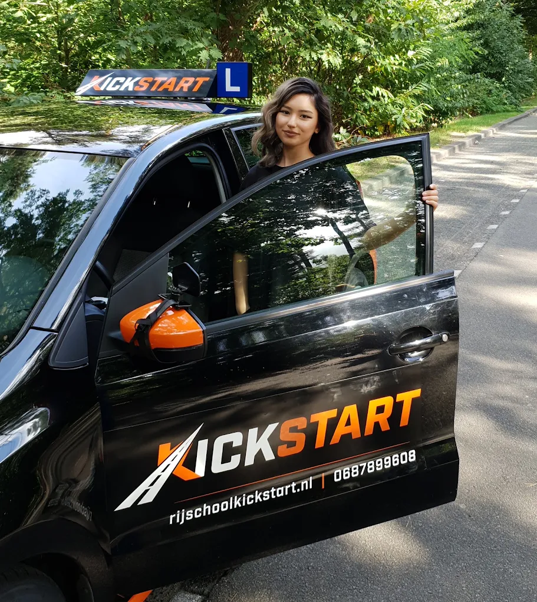

De man die tempo maakt
Rijschool Kickstart is Bekir: één vaste instructeur in Tilburg die bewees dat snel je rijbewijs halen en relaxed lessen prima samengaan.

Relaxed in de auto,
scherp op je proces
Vraag honderd leerlingen naar Bekir en je hoort steeds dezelfde woorden: relaxed, geduldig, duidelijk. Hij is op tijd, komt zijn afspraken na en weet ondanks een volle agenda altijd een gaatje te vinden als jouw examen dichterbij komt.
Maar relaxed betekent niet vrijblijvend. Elke les van 75 minuten heeft een doel, fouten worden rustig en concreet uitgelegd en je hoort eerlijk waar je staat. Ward haalde er op zijn 31e zijn rijbewijs, Maxime verloor er haar angst voor de snelweg en Mariem stapte in zonder zelfvertrouwen en uit als bestuurder die het examen moeiteloos haalde. Dat is geen toeval, dat is werkwijze.
English spoken: lessons are just as comfortable in English. Nathan passed first time and called Bekir "very accommodating and very precise about exactly what is expected from CBR".
Van proefles naar rijbewijs
Proefles van 60 minuten
Je rijdt een uur en bespreekt daarna samen de voertuigcontrole, hoeveel lessen je ongeveer nodig hebt, welk pakket daarbij past, wanneer je kunt starten en wat het gaat kosten. Eerlijk verhaal, geen verkooppraatje.
Lessen op jouw tempo
Meestal start je binnen een week. Standaardlessen duren 75 minuten en zijn volledig van jou: er stapt nooit tussendoor een andere leerling in of uit. Liever 60 of 90 minuten? Dat kan ook.
Examenklaar, ook mentaal
Je oefent complete examenroutes en de situaties waar jij op stuk loopt, net zo lang tot ze gewoon voelen. Zenuwen horen erbij; Bekir zorgt dat je weet wat je kunt voordat je bij het CBR voorrijdt.
De rijschool voor de
herstart
Loop je vast bij je huidige rijschool? Je bent niet de eerste die overstapt. Bekir begint niet opnieuw bij nul: in de proefles ziet hij precies wat je al kunt en wat er eerder misging. Daarna repareert hij gericht, in plaats van uren op te vullen.
Maurits kwam van een andere school en slaagde in één keer. Djino zakte elders vier keer en haalde zijn eerstvolgende examen bij Kickstart meteen. Tommie had "altijd veel gedoe" bij zijn oude rijschool en merkte hier vanaf les één het verschil.
“Ik heb altijd veel gedoe gehad bij een andere rijschool maar toen ik eenmaal bij Kickstart zat was dat allemaal verdwenen en werd ik professioneel behandeld.”
“Na 4 keer gezakt te zijn voor mijn praktijkexamen, de overstap gemaakt naar Kickstart. Het eerstvolgende praktijkexamen meteen geslaagd!”
Ook Berkel-Enschot, Udenhout, Goirle, Riel en Oisterwijk vallen binnen het werkgebied.
Vanaf 16,5 jaar lessen, vanaf 17 examen doen en tot je 18e rijden met een begeleider.
Ook na school of werk lessen dus. Plannen gaat snel via WhatsApp.
Rijd één les en
je weet genoeg
De proefles duurt 60 minuten en is gratis bij een pakket vanaf 20 lessen. Je krijgt meteen een eerlijke inschatting van je aantal lessen en de kosten.